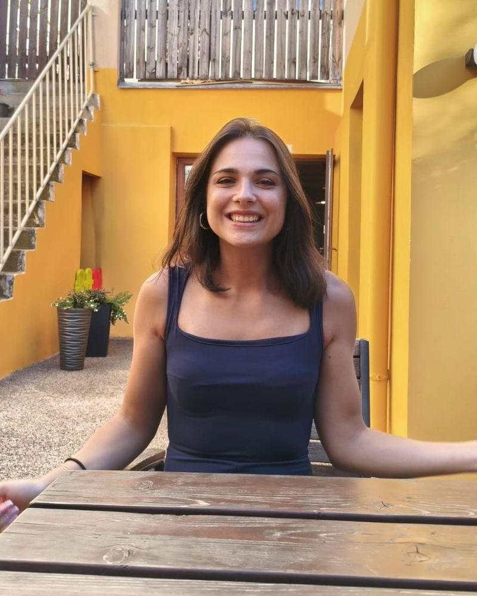

Učte se s ostatními a mluvte každý týden
Malá skupina si zachovává to nejlepší z individuální lekce, tedy hodně prostoru pro mluvení a osobní zpětnou vazbu, a přidává něco navíc: procvičujete se skutečnými lidmi, slyšíte jiné chyby a jiné otázky a držíte pravidelný týdenní rytmus. Ve skupině tří až pěti lidí se na každé lekci dostane ke slovu každý.
Kurz v kostce
| Začátek | Leden |
|---|---|
| Délka | 12 týdenních lekcí po 60 minutách |
| Velikost skupiny | 3 až 5 studentů |
| Forma | Živě online, přes video s Lucií (ne v učebně). Připojíte se z Prahy nebo odkudkoli |
| Den a čas | Domluví se se studenty, kteří se do skupiny přihlásí |
| Úroveň | Začátečníci (A1–A2) od ledna. Mírně pokročilí a pokročilí: čekací listina |
| Jazyk výuky | Italština, vysvětlení podle potřeby anglicky; Lucia mluví i trochu česky |
| Materiály | Materiály a poznámky od Lucie. Učebnice Nuovo Espresso je dobrovolná |
| Cena | 18 € za osobu a lekci, 216 € za celý 12týdenní kurz |
| Platba | Až po potvrzení skupiny, přes Revolut nebo bankovním převodem |
| Lektorka | Lucia, postgraduální Master v didaktice italštiny |
Co se naučíte za 12 týdnů
Kurz má jasný plán a Lucia ho přizpůsobí lidem ve skupině: pokud všichni potřebují víc mluvit nebo víc pomoct s jedním tématem, lekce se tomu přizpůsobí.
Začátečníci (A1–A2) · od ledna
Od nuly, nebo znovu po dlouhé pauze. Se správnou výslovností od prvního dne.
- Představíte se a řeknete, kde bydlíte, co děláte a jakou máte rodinu.
- Objednáte si v kavárně nebo restauraci, nakoupíte, zeptáte se na cenu a na cestu.
- Čísla, dny, hodiny a data, abyste si mohli něco domluvit.
- Přítomný čas, členy, rody a nejužitečnější každodenní slovesa.
- První kroky v minulosti: řeknete, co jste dělali o víkendu.
Začínáte s italštinou? Přečtěte si italštinu pro začátečníky a nejdůležitější fráze na cesty.
Mírně pokročilí nebo pokročilí? Zapište se na čekací listinu
Tyto skupiny se otevřou, jakmile se na stejnou úroveň přihlásí tři lidé. Vyberte svou úroveň ve formuláři níže: je to zdarma a Lucia se vám ozve, až může vaše skupina začít. Do té doby jsou nejlepší cestou individuální lekce.
Mírně pokročilí (B1) · čekací listina
Překonejte stagnaci a mluvte sebevědoměji.
- Minulé časy, které konečně pochopíte: passato prossimo vs imperfetto.
- Mluvte o plánech, přáních a radách pomocí budoucího času a kondicionálu.
- Zájmena, ci a ne, aby vaše věty zněly přirozeně.
- Každý týden vyprávění a vlastní názor na skutečná témata.
Pokročilí (B2–C1) · čekací listina
Vybruste nuance, idiomy a styl.
- Konjunktiv tam, kde ho Italové opravdu používají.
- Formální a neformální italština do práce, do e-mailů i do běžného života.
- Diskuse, argumentace a rozhovory o článcích, filmech a zprávách.
- Přesná zpětná vazba k chybám, které ještě děláte.
Jak skupinová lekce probíhá

- Živá videolekce: odkaz dostanete před každou hodinou.
- Krátká úvodní konverzace a pak jedno jasné téma dne.
- Mluvení ve dvojicích i ve skupině, s vlídnými opravami od Lucie.
- Poznámky a dobrovolné domácí úkoly po lekci, abyste pokračovali i během týdne.
Učebnici si kupovat nemusíte. Pokud máte knihu rádi, lekce mohou navazovat na Nuovo Espresso (ALMA Edizioni), ale všechno potřebné dostanete od Lucie.
Pro koho je kurz
- Pro lidi v Praze, kteří chtějí pravidelnou hodinu italštiny bez cestování přes celé město.
- Pro studenty kdekoli v Evropě: lekce se řídí pražským časem (SEČ) a čas se domlouvá se skupinou.
- Pro každého, kdo se chystá na dovolenou nebo stěhování do Itálie, nebo se chce domluvit s italským partnerem, přáteli či rodinou.
- Pro kamarády nebo páry, které se chtějí učit spolu: přihlaste se společně a napište to do e-mailu.
Nevíte, jakou máte úroveň?
Test úrovně na úvodní stránce zabere deset vteřin. Lucia vaši úroveň před začátkem kurzu ještě ověří, abyste se dostali do správné skupiny. Pokud chcete nejdřív mluvit, domluvte si 30minutovou lekci zdarma.
Jak se přihlásit
- Vyplňte krátký formulář s úrovní, o kterou máte zájem, časovým pásmem a dny a časy, které vám vyhovují, nebo napište Lucii e-mail. Klidně česky.
- Lucia potvrdí vaši úroveň a den a čas vaší skupiny. Ve skupině je nejvýš pět míst.
- Zaplatíte kurz přes Revolut (nejraději) nebo bankovním převodem, až když je skupina potvrzená.
Pro skupinové lekce platí stejné pravidlo jako pro individuální: lekci můžete zrušit nejpozději 24 hodin předem, později se počítá jako odučená.
Skupina, nebo individuálně?
Skupinu si vyberte, pokud se rádi učíte s ostatními, chcete pravidelný týdenní rytmus a nižší cenu. Individuální lekce si vyberte, pokud potřebujete vlastní tempo, konkrétní cíl, například práci nebo zkoušku, nebo flexibilní rozvrh. Obojí lze i kombinovat.